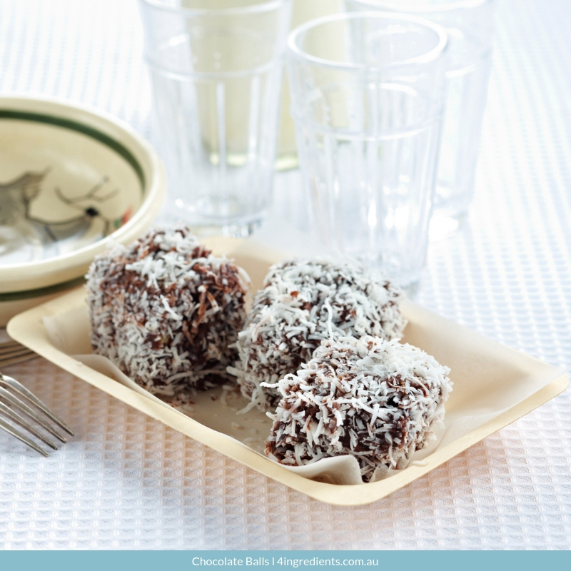

Chocolate balls

Chocolate balls
Chocolate balls are a spherical confection made of or dipped into chocolate.
Other ingredients may include peanut butter or marzipan. In Nordic countries,
most notably Sweden, Denmark, Finland and Iceland, chokladboll or kokosbollar
are chocolate balls mostly covered in coconut.
Ingredients
- 200 gram Arrowroot biscuits (crushed)
- 3 tablespoons cacao powder
- 400 gram can condensed milk
- 1/2 cup desiccated coconut
Steps
- Mix crushed biscuit, cacao and condensed milk together
to make a sticky consistensy
- Using a generous teaspoon of mixture, roll into balls
and cover in coconut
- Chill before serving
These can also be frozen